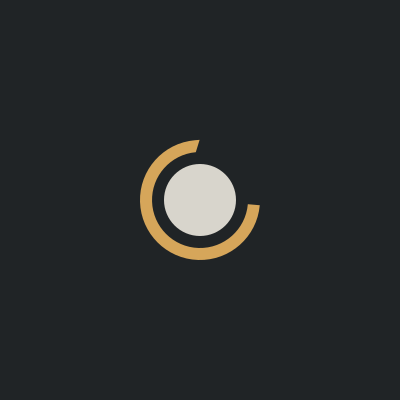

primary lockup · dark canvas
primary lockup · light canvas
stacked · dark
stacked · light
wordmark-alone · deck headers, nav
icon-alone · 64 / 40 / 20px
icon · light canvas

social avatar · 1:1 square
favicon · simplified (symmetric gap ≤24px)